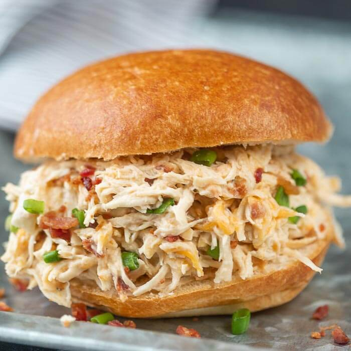

Crack Chicken

Cheesy Ranch Chicken
Creamy shredded chicken breasts made in the Instant Pot pressure cooker in just 15 minutes! This shredded Instant Pot Crack Chicken is our newest cheese and ranch obsession. Serve on sandwich buns or on lettuce wraps with bacon and green onions for a quick weeknight dinner recipe
Ingredients
- 3 pounds chicken breasts
- ½ cup low sodium chicken broth
- 2 teaspoons Greek or Italian seasoning
- 2 tablespoons ranch seasoning dry powder
- 5 ounces cream cheese, cut into 1 oz squares
- 1½ teaspoons hot sauce
- 1 cup cheddar cheese, shredded
- ½ cup parmesan cheese
- 1 tablespoon dried parsley
- 6 slices bacon, chopped
- 7 green onion stalks, diced
Instructions
- Cook bacon according to package directions. Chop; set aside.
- In an Instant Pot ( or pressure cooker ) insert, add chicken broth, chicken breasts, Greek or Italian seasoning, dry ranch seasoning powder, and cream cheese.
- Turn device on. Secure lid.
Set pressure valve to SEALING.
MANUAL or PRESSURE COOK; cook on high-pressure 15 minutes.
- Select CANCEL to turn off device. Allow the pressure valve to Natural Pressure Release at least 10 minutes.
Quick-release pressure after 10 minutes by venting the seal. Once pressure pin drops, open lid and turn off device.
- Remove only the chicken to bowl. Shred with two forks.
- Whisk remaining cream cheese mixture. Add in shredded cheddar cheese, parmesan cheese, hot sauce, dried parsley, and bacon.
- Toss in shredded chicken, and green onions; mix well.
- Serve on bread rolls or in lettuce wraps.
Home